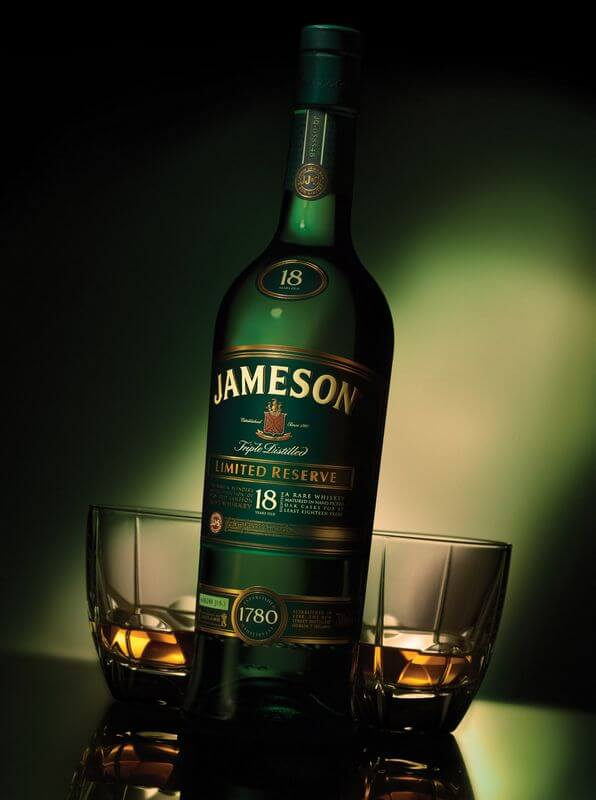

Jameson
Описание товара
Самый популярный алкогольный напиток Ирландии, в которой он разливается и выдерживается более двухсот лет.
Характеристики
| Характеристики | |
| Величина | Значение |
| Содержимое | Обладает мягкостью вкуса и цветом с оттенками золота. Такой оттенок удается получить благодаря бочкам из дуба, в которых хранится напиток. |
| Цена | от 40$ |
Подробное описание товара
История
В уже очень далеком 1780 году, местный предприниматель Джон Джемесон организовал в Дублине винокурню John Jameson & Son. Спустя некоторое время, она стала практически самой крупной в Ирландии, что неудивительно, учитывая, сколько сил было вложено Джемесоном в ее развитие и непрерывную модернизацию. К закату своей жизни, Джон сумел создать действительно мощное, особенно по тем временам, предприятие, которое заслужило доброе имя не только в Ирландии, но и во всей Англии. Младший сын Джемесона продолжил дело отца, да так успешно, что шотландский скотч не мог и близко соперничать с популярностью ирландского виски.
Особенности вкуса и аромата
В производстве этого уникального алкогольного напитка используется лишь ячмень, солод и чистая вода. Сушка солода происходит в специальных печках, что позволяет сохранить все вкусовые качества. Никакого присущего шотландскому скотчу запаха торфа и дыма в напитке нет. Виски Jameson исключительно мягок, что достигается тройной перегонкой, а дубовые бочки обеспечивают неповторимый золотистый цвет.
Другие товары
BushmillsTullamore Dew